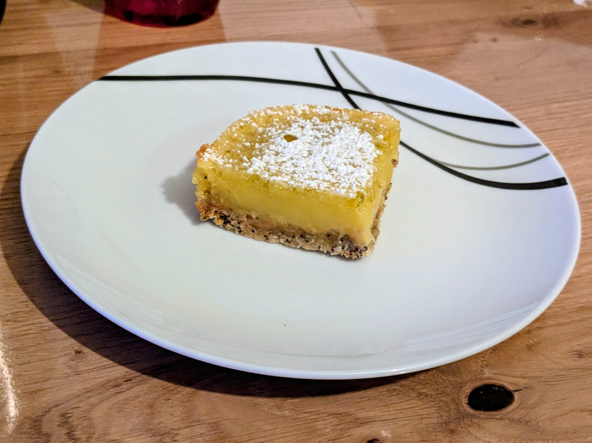

Tarte au citron (moderne)

Pour 16 petits carrés, ou 9 gros :
- 155g (125g + 30g) de farine à pâtisserie
- 320g (80g + 230g) de sucre
- 115g de beurre bien froid
- Une pincée de sel
- Une belle cuillère à soupe de graines de pavot
- Trois œufs
- Un jaune d'œuf
- 3-4 citrons (on peut en remplacer un par un citron vert)
- Préchauffer le four à 180°C en chaleur tournante. Mélanger 125g de farine, 80g de sucre, le sel et le pavot dans un bol. Couper le beurre en dés et sabler le tout avec les doigts pour que ça fasse une pâte à crumble avec plein de miettes.
- Beurrer un moule (idéalement, carré, de 20cm, en métal) et recouvrir au moins le fond avec du papier sulfurisé. Y disposer la pâte à crumble en appuyant de partout pour que ça soit à peu près homogène. Enfourner au moins 20 minutes, jusqu'à ce que tout le dessus soit coloré.
- Pendant ce temps, zester et presser les citrons (en filtrant bien la pulpe), jusqu'à en récupérer 150mL. Mélanger le zeste à 230g de sucre en frottant entre les doigts.
- Ajouter la farine, puis les œufs, puis le jus de citron à la préparation. Mélanger doucement avec un fouet; il faut que ça devienne homogène mais ne pas y ajouter trop d'air (idéalement, on ne doit voir trop de bulles sur la surface).
- Ajouter la crème sur la base du gâteau à la sortie du four. Descendre la température du four à 160°C et enfourner pour 18 minutes; il faut que toute la surface soit sèche mais que le dessous reste un peu coulant.
- Laisser refroidir dans le moule ; une fois que c'est à température ambiante, mettre au frigo quelques heures. Démouler délicatement et découper en carrés avant de les servir saupoudrés de sucre glace (ajouté à la dernière minute, sinon ça fond).
Remarque : c'est très bon le jour même, mais encore meilleur le lendemain.